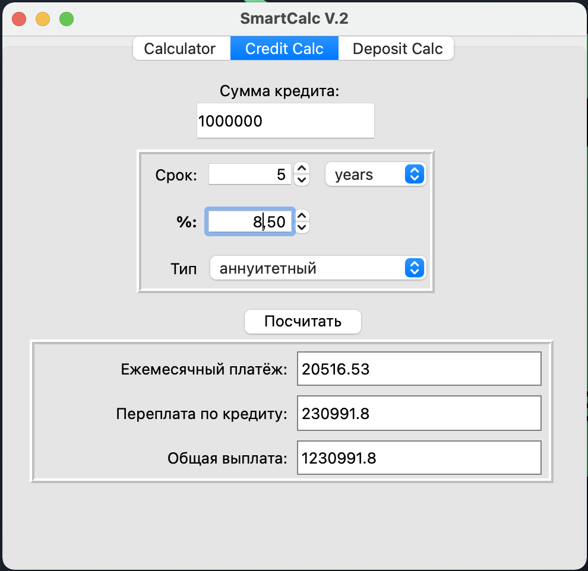
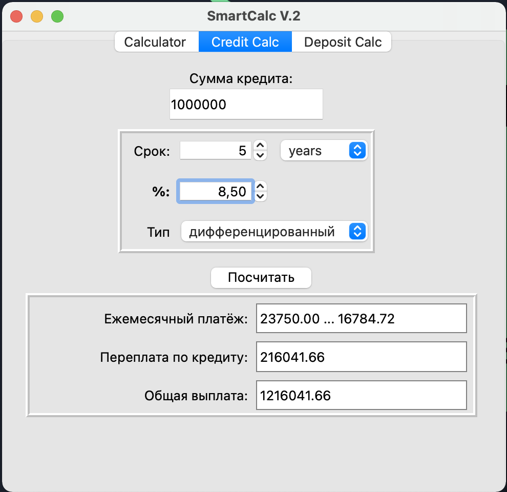

In this project we will implement an extended version of the usual calculator, which can be found in the standard applications of each operating system. In addition to basic arithmetic operations such as add/subtract and multiply/divide, we need to supplement the calculator with the ability to calculate arithmetic expressions by following the order, as well as some mathematical functions (sin, cos, sqrt, etc.).

Bracketed arithmetic expressions in infix notation must support the following arithmetic operations and mathematical functions:
It is possible to graph the function

There is a special mode "Credit calculator":
 